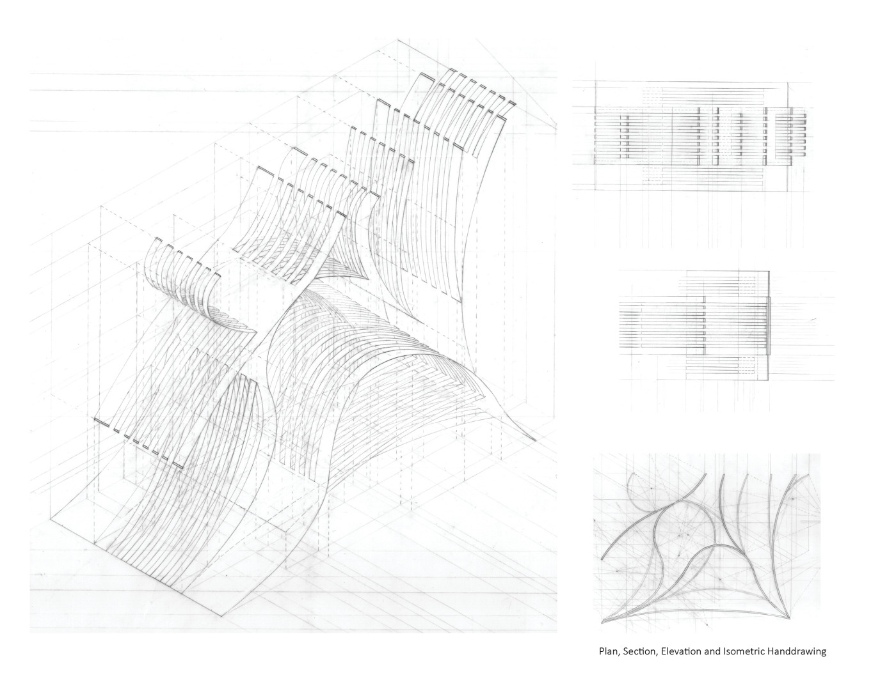
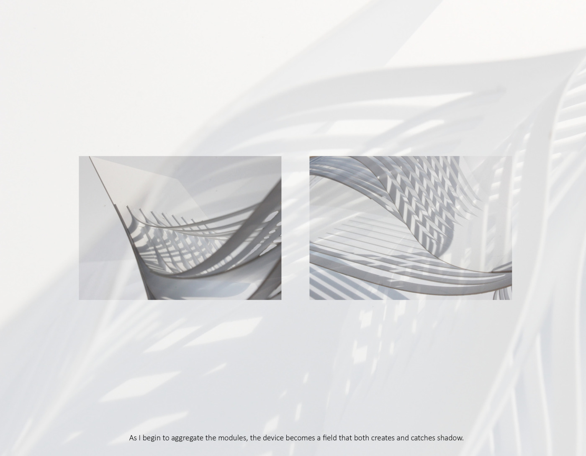
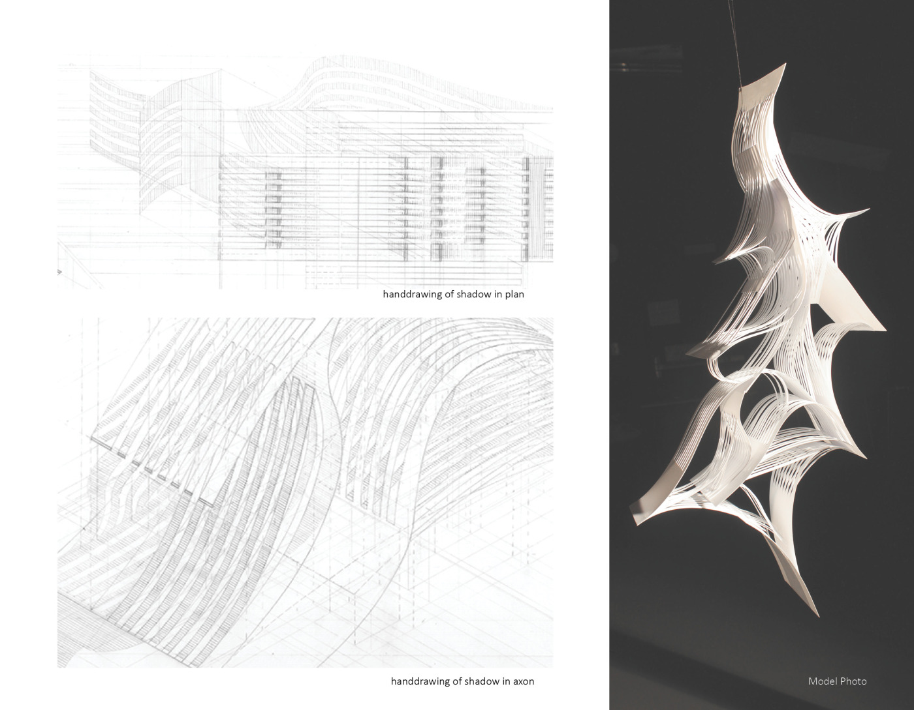
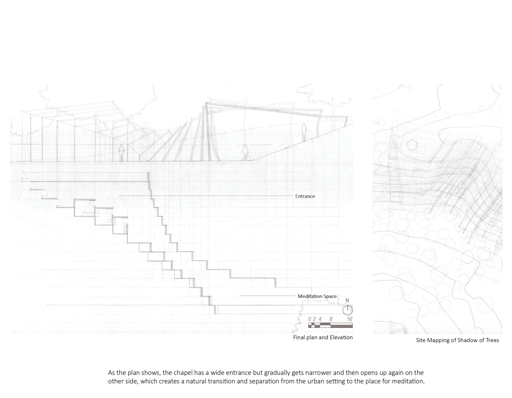
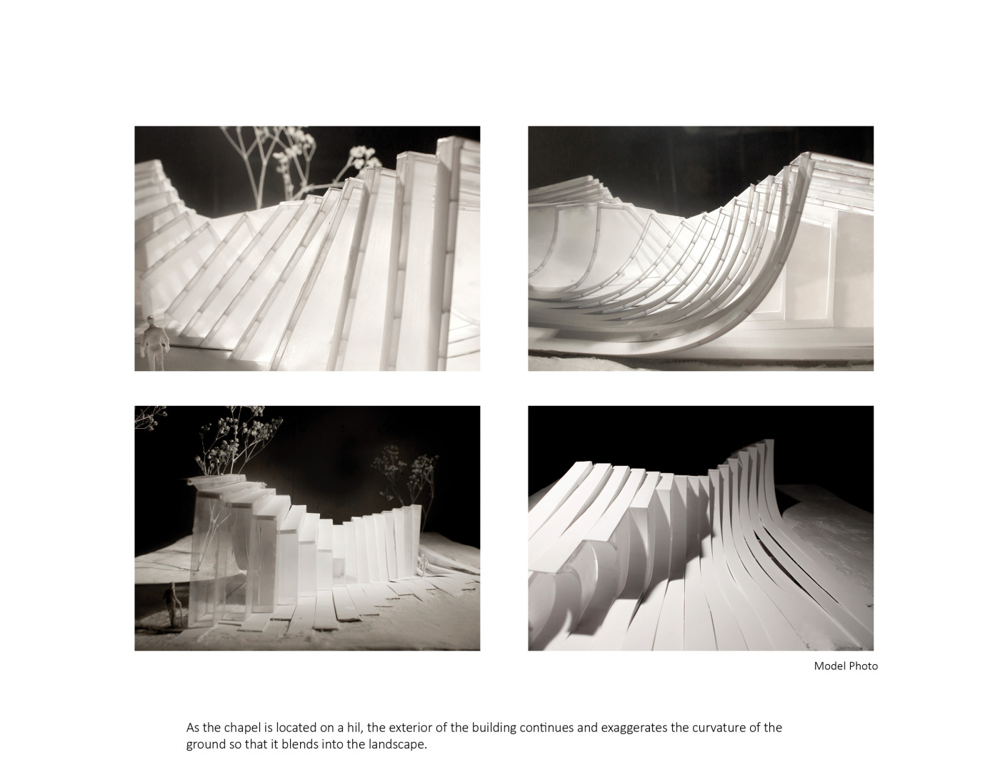

The concept of this project is a non-religious urban chapel which is available for anyone that wants to meditate and seeks peace in the urban area. I begin with designing a light device to explore positive and negative space and the contrast between light and shadow projected on curved surface. The language is continued in the development of the chapel as it exaggerates the curvature of the ground and creates similar light and shadow contrast.
Semester: 2015 Fall
Intructor: Nathaniel Elberfeld
Skills: Handdrafting, Photography, Photoshop, Physical Model Building, Laser Cut
Light Device




Floor Plan

Model Photos
